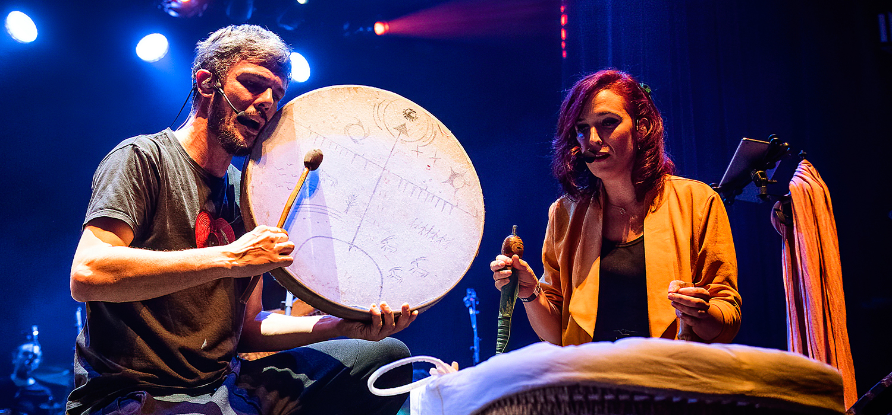
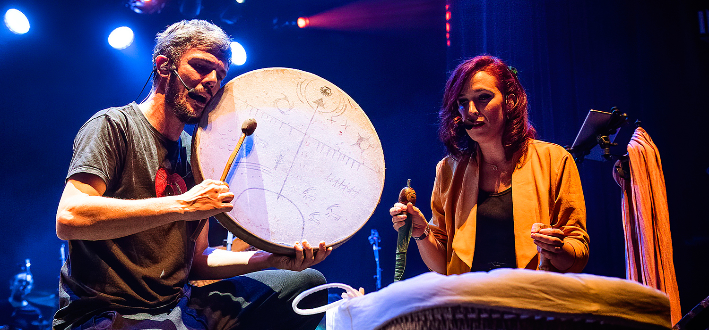
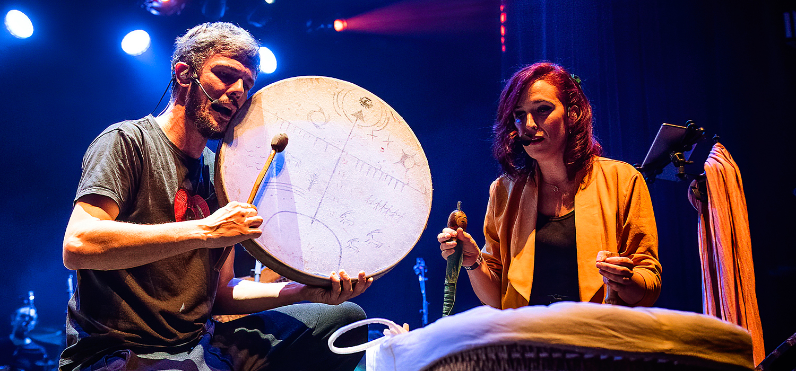

CULTURALES
Como los cuentos,museos y teatros
 


LOS MÁS PEQUES
Como fomentar una buena comunicación y una mejor relación.


La creatividad en los niños es innata y su imaginación no tiene límites, pero ambas capacidades tienen que ser motivadas ó guíadas por alguna actividad,ya que la mayor fuente de aprendizaje es la experimentación.
Por ello, en esta ocasión hablaremos de los beneficios y el impacto de las actividades culturales en los niños para que conozcas todo lo que se puede lograr con este ámbito que forma parte de la educación.
La cultura se puede clasificar en cinco categorías: artes escénicas como la danza, teatro, canto, música;artes visuales trabajando con manualidades, diseño, pintura, fotografía; la literatura haciendo uso de la lectura y escritura ;cultura teniendo la intención de asistir a museos, galerías de arte, ferias, conciertos y artes digitales con un uso responsale de la actividad cultural que tienes en internet.
El ámbito cultural esta abierto para todo tipo de publico con ganas de conocer y descubrir, por lo que los niños pueden iniciarse en cualquier moemnto y con diferentes recursos en la cultura y en cualquier categoría mencionada anterior mente con la finalidad de ampliar sus conocimientos generales o bien, participar activamente en una de las tantas disciplinas artísticas de acuerdo a sus gustos, habilidades y talentos.
| PÁGINAS | CONTENIDO |
| CON MI IMAGINACIÓN | Esta pagina esta dirigida para todo tipo de público que quiera desarrolar el arte. |
| |
|
| RECOMENTACIONES CULTURALES |
Dieferentes recursos para explotar el potencial de la imaginación y creatividas. Como los cuentos,museos y teatros |
|  |
|
| ACTIVIDADES | Diversas actividades o propuestas relacionadas con el arte. |
| |
|
| CÓMO DIRIGIRSE A LOS MÁS PEQUES |
Contenido y herramientas para entender mejor la posición de un niño frente a un adulto.
Como fomentar una buena comunicación y una mejor relación. |
| |
|
| Autoría: Alisson Andrea Espin Herrera | |
Son múltiples los beneficios de las actividades culturales en los niños y de ellos es posible destacar los siguientes:
Forma de expresión:El arte es una forma de expresión que ayuda a transmitir sentimientos e ideas por medio del baile, la música, el canto, la pintura, la literatura, etc. Es decir, los niños adquieren los conocimientos para saber expresarse de diferentes maneras.Aumentan la autoestima:Hacer una foto,realizar manualidades,cuando se implican y ponen especial dedicación y esfuerzo, consiquiendo el resultado esperado, aumenta su confianza en ellos mismos y de lo contario tambien aprenden a trabajar la loterancia de no conseguir lo esperado.
Impulsan la creatividad:El desarrollo de cualquier actividad cultural implica la participación de los cinco sentidos y el uso de diversos materiales, asi pues impulsando la creatividad de las pequeñas mentes brillantes y el resultado son piezas muy originales.Desarrollan el criterio propio:Visitar museos, ir al teatro o ver películas les ayuda a los niños a desarrollar su criterio propio sobre lo que les gusta y lo que no. Recuerda que el arte tiene muchas interpretaciones y conocer la de los pequeños resulta interesante.Nuevos conocimientos:Los conocimientos culturales son parte del desarrollo integral de los niños debido a que además de aprender técnicas propiamente artísticas, su capacidad de razonamiento, análisis, comunicación y concentración van expandiendose .
haz clíc aquí para ir a las recomendacionesEl arte es un lenguaje que hará que el niño se exprese a través de diferentes elementos y será la creatividad y la imaginación las que tengan un papel más importante en todo este proceso.
Es una forma de vivir y tiene muchísimos beneficios.Cuando el niño dibuja, pinta o realiza otras actividades de expresión plástica, sin darse cuenta estará expresando emociones y sensaciones, incluso las que se encuentras más profundas dentro de su ser, porque las emociones están presentes en nosotros desde que nacemos.Además el arte tiene muchos significados, tantos, como se les pase a los niños por la cabeza.
Las actividades relacionadas con el arte son importantes para el desarrollo del niño desde edades tempranas. Las actividades artísticas favorecen el desarrollo motor, lingüístico, cognitivo, social y emocional de los niños.
Aquí encontrarás actividades para que lo estimules tempranamente y lo prepares para el futuro.
Los padres en diferentes culturas también juegan un papel importante en moldear el comportamiento y los patrones de pensamiento de los niños. Típicamente, los padres son los que preparan a los niños para interactuar con la sociedad en general.
La interacción de los niños con sus padres a menudo actúa como el arquetipo de cómo comportarse con los demás, aprendiendo una variedad de reglas socioculturales, expectativas y tabúes. Por ejemplo, los niños pequeños típicamente desarrollar un estilo conversacional parecido al de sus padres y eso a menudo depende o se ve afectado en gran medidad al entorno que nos rodea como la cultura y costumbres que recibamos día a día.
A medida que el mundo se globaliza cada vez más, el conocimiento sobre las diferencias culturales en el pensamiento, la memoria y la forma en que interactúan con los adultos tiene importantes implicaciones prácticas en muchas áreas en las que debe comprender la psicología de un niño.
haz clíc aquí para aprender a comunicarte